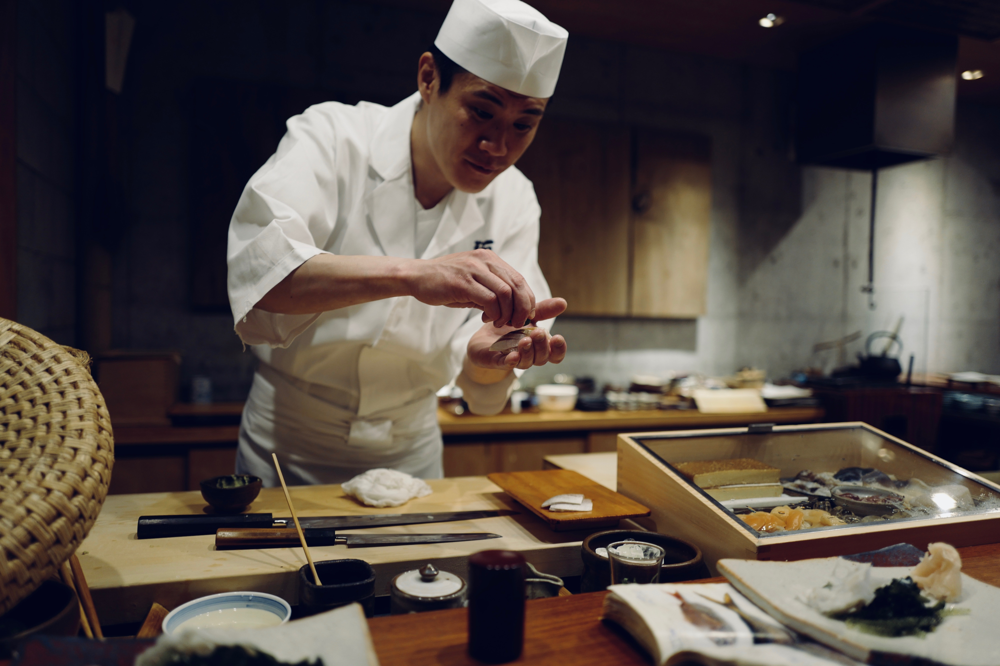
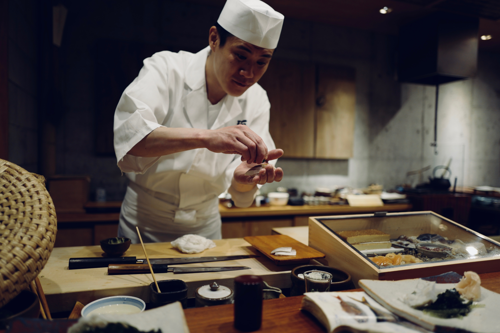

el simpatico equipo de sushiito
 



"empecé como limpiador de pescado hace más de 25 años en en centro de osaka. aprendí de los mejores maestros del momento. hoy son mis hijos quienes elaboran el sushi tal como dicta la tradición"
hichito nishimura:gerente de shushiito"mi padre me inclucó el don de gentes que hoy me permite dirigirme a nuestros clientes con total confianza. detrás del éxito siempre hay un enorme trabajo y tengo la certeza de que la gente que nos acude al restaurante lo sabe".
fred nishimura:barman sushi"desde pequeña tuve bien claro que el comensal es el principal protagonista de la función que cada día se lleva a cabo en un restaurante de sushi. en sushiito velamos por una experiencia única e inigualable".
nakene nishimura:jefa de sala"en sushiito os invitamos a degustar un gran surtido de platos variados que guardan el equilibrio exacto entre frescura, sabor y armonia. tras cada elaboración culinaria hay un pedacito de nuestra esencia"
joe nishimura: jefe de cocina